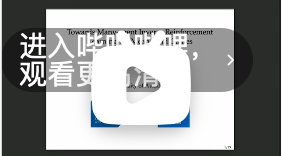
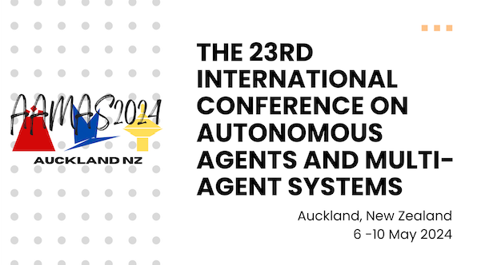

报告和演讲
| Identify and Mitigate Bias-Perpetuating Behaviours: Decoding Animal Behaviour via Many-agent IRL | AAMAS 2024 Affinity Group Event on Diversity in AI. Invited talk. 奥克兰. 2024年5月7日. | 演示文稿 | |
| Towards Many-agent Inverse Reinforcement Learning via Mean Field Games | DAI 2023. 受邀报告. 新加坡. 2023年12月2日. |  | 演示文稿 |
| Promotional talk for AAMAS 2024 at the closing session of AAMAS 2023 | AAMAS 2023. 伦敦. 2023年6月2日. |  | 演示文稿 |
| Mean Field Game as a Framework for Many-agent Inverse Reinforcement Learning | ML and MFG seminar. 在线. 2022年12月6日. |  |
演示文稿 |
研究基金
当前项目
-
AI-based behavioural analytics for live sports broadcast
资助期限: 2024 -- 2026
承担角色: Associate Investigator
资助机构: Ministry of Business, Innovation & Employment (MBIE) Endeavour Fund
资助金额: 100万新西兰元
获奖
| AAMAS 2022 会议奖学金 | 2022年4月 |
| 谷歌全球博士奖研金提名 (澳大利亚-新西兰区) | 2020年8月 |
| BSCI 2019最佳论文奖 | 2019年7月 |
| Precision Driven Health research partnership 暑期奖学金 | 2019年7月 |
| 奥克兰大学博士奖学金 | 2018年11月 - 2021年11月 |
学术服务
会议审稿:
| ECAI 2024, ACL 2024, AAMAS 2023-2025, ICNLP 2022, BSCI 2022. |
会议审稿:
| JMLR. |
学术活动组织:
| Local Co-chair of AAMAS 2024 |
| Co-chair of AAMAS 2024 AAAI track |
发表著作
如果出版方链接不是免费的，请参考arXiv或其他平台上托管的PDF文件。部分文章附有演讲视频、演示文稿、视频、代码和其他额外材料。
获奖论文已突出显示。
博弈论，多智能体系统和强化学习
-
Meta-Inverse Reinforcement Learning for Mean Field Games with Probabilistic Context Variables.
Yang Chen, Xiao Lin, Bo Yan, Libo Zhang, Jiamou Liu, Neset Özkan Tan, Michael Witbrock.
Thirty-Eighth AAAI Conference on Artificial Intelligence.
AAAI 2024 | arXiv | Poster | Code -
Density-based Correlated Equilibrium for Markov Games.
Libo Zhang (equal contribution), Yang Chen (contact, equal contribution), Toru Takisaka, Bakh Khoussainov, Michael Witbrock, Jiamou Liu.
The 22nd International Conference on Autonomous Agents and Multi-agent Systems.
AAMAS 2023 | arXiv | Poster | Code -
Adversarial Inverse Reinforcement Learning for Mean Field Games.
Yang Chen, Libo Zhang, Jiamou Liu, Neset Özkan Tan, Michael Witbrock.
The 22nd International Conference on Autonomous Agents and Multi-agent Systems.
AAMAS 2023 | arXiv | Poster | Slides -
Interconnected Neural Linear Contextual Bandits with UCB Exploration.
Yang Chen, Miao Xie, Jiamou Liu, Kaiqi Zhao.
The 26th Pacific-Asia Conference on Knowledge Discovery and Data Mining.
PAKDD 2022 -
Individual-Level Inverse Reinforcement Learning for Mean Field Games.
Yang Chen, Libo Zhang, Jiamou Liu, Shuyue Hu.
The 21st International Conference on Autonomous Agents and Multi-agent Systems.
AAMAS 2022 | arXiv -
Social Capital Games as A Framework for Social Structural Pattern Emergence.
Yang Chen, Jiamou Liu.
2020 IEEE/ACM International Conference on Advances in Social Networks Analysis and Mining.
ASONAM 2020 -
Social Structure Emergence: A Multi-agent Reinforcement Learning Framework for Relationship Building.
Yang Chen, Jiamou Liu, He Zhao, Hongyi Su.
The 19th International Conference on Autonomous Agents and Multi-agent Systems.
AAMAS 2020 | Slides | Talk -
Can Reinforcement Learning Enhance Social Capital?.
He Zhao, Hongyi Su, Yang Chen, Jiamou Liu, Bo Yan, Hong Zheng.
The International Workshop on Web Information Systems in the Era of AI. A WISE 2020 Workshop.
WISE 2020 -
A Reinforcement Learning Approach to Gaining Social Capital with Partial Observation.
He Zhao, Hongyi Su, Yang Chen (contact), Jiamou Liu, Hong Zheng, Bo Yan.
The 16th Pacific Rim International Conference on Artificial Intelligence.
PRICAI 2019
深度学习及其应用
-
Behaviour Modelling of Social Animals via Causal Structure Discovery and Graph Neural Networks.
Gaël Gendron (co-first), Yang Chen (co-first), Mitchell Rogers, Yiping Liu, Mihailo Azhar, Shahrokh Heidari, David Arturo Soriano Valdez, Kobe Knowles, Padriac O'Leary, Simon Eyre, Michael Witbrock, Gillian Dobbie, Jiamou Liu and Patrice Delmas.
The 23rd International Conference on Autonomous Agents and Multi-agent Systems.
AAMAS 2024 (Extended Abstract) -
Robust Node Classification on Graph Data with Graph and Label Noise.
Yonghua Zhu, Lei Feng, Zhenyun Deng, Yang Chen, Robert Amor, Michael Witbrock.
Thirty-Eighth AAAI Conference on Artificial Intelligence.
AAAI 2024 -
Chain of Propagation Prompting for Node Classification.
Yonghua Zhu, Zhenyun Deng, Yang Chen, Robert Amor, Michael Witbrock.
ACM MultiMedia 2023.
ACM MM 2023 -
MSDC: Non-intrusive Load Monitoring with a Dual-CNN Model.
Jialing He, Jiamou Liu, Zijian Zhang, Yang Chen, Yiwei Liu, Bakh Khoussainov, Liehuang Zhu.
Thirty-Seventh AAAI Conference on Artificial Intelligence (AAAI-23).
AAAI 2023 | arXiv
图论
-
Becoming Gatekeepers Together with Allies: Collaborative Brokerage over Social Networks.
Yang Chen, Jiamou Liu.
2019 IEEE/ACM International Conference on Advances in Social Networks Analysis and Mining.
ASONAM 2019 | Poster | Code -
Distributed Community Detection over Blockchain Networks Based on Structural Entropy.
Yang Chen, Jiamou Liu.
The 2019 ACM International Symposium on Blockchain and Secure Critical Infrastructure (BSCI). An AsiaCCS Workshop.
Best Paper Award | BSCI 2019 | PDF -
Dynamic Relationship Building: Exploitation Versus Exploration on a Social Network.
Bo Yan, Yang Chen, Jiamou Liu.
The 18th International Conference on Web Information Systems Engineering.
WISE 2017 | Code
自然语言推理
-
Neuromodulation Gated Transformer.
Kobe Knowles, Joshua Bensemann, Diana Benavides Prado, Vithya Yogarajan, Michael Wit- brock, Gillian Dobbie, Yang Chen.
The Eleventh International Conference on Learning Representations. ICLR 2023 Tiny Papers.
arXiv -
Multi2Claim: Generating Scientific Claims from Multi-Choice Questions for Scientific Fact-Checking.
Neset Tan, Trung Nguyen, Josh Bensemann, Alex Peng, Qiming Bao, Yang Chen, Mark Gahegan, Michael Witbrock.
The 17th Conference of the European Chapter of the Association for Computational Linguistics.
EACL 2023 -
Prompt-based Conservation Learning for Multi-hop Question Answering.
Zhenyun Deng, Yonghua Zhu, Yang Chen, Qianqian Qi, Michael Witbrock, Patricia Riddle.
The 29th International Conference on Computational Linguistics.
COLING 2022 -
Interpretable AMR-Based Question Decomposition for Multi-hop Question Answering.
Zhenyun Deng, Yonghua Zhu, Yang Chen, Michael Witbrock, Patricia Riddle.
The 31st International Joint Conference on Artificial Intelligence.
IJCAI 2022 -
Eye Gaze and Self-attention: How Humans and Transformers Attend Words in Sentences.
Joshua Bensemann, Alex Yuxuan Peng, Diana Benavides-Prado, Yang Chen, Nes ̧et Özkan Tan, Paul Michael Corballis, Patricia Riddle, and Michael Witbrock.
Cognitive Modeling and Computational Linguistics (CMCL) 2022. An ACL 2022 Workshop.
PDF -
An explainability analysis of a sentiment prediction task using a transformer-based attention filter.
Neset Özkan Tan, Joshua Bensemann, Diana Benavides-Prado, Yang Chen, Mark Gahegan, Lia Lee, Alex Yuxuan Peng, Patricia Riddle, Michael Witbrock.
The Ninth Annual Conference on Advances in Cognitive Systems
ACS 2021
数据集
-
Meerkat Behaviour Recognition Dataset.
Mitchell Rogers, Gael Gendron, David Soriano Valdez, Mihailo Azhar, Yang Chen, Shahrokh Heidari, Caleb Perelini, Padriac O'leary, Kobe Knowles, Izak Tait, Simon Eyre, Michael Wit- brock, Patrice Delmas.
3rd Workshop on CV4Animals: Computer Vision for Animal Behavior Tracking and Modeling (in conjunction with CVPR 2023).
Dataset